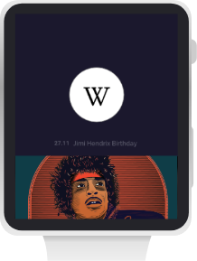
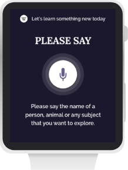
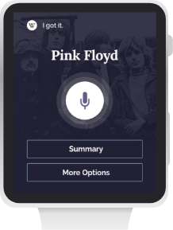
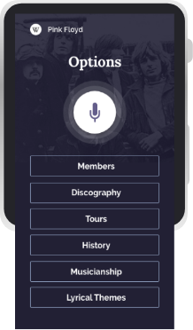
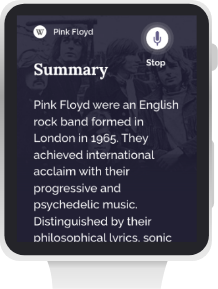

SHOPPING EXPERIENCE
Nespresso
Nespresso website redesign.

To redesign Nespresso website and
improve shopping experience.
This project was done during the Aela’s
Master of Interface Design bootcamp.
Competitive Analysis, Heuristic Analysis, User Research (Survey and User Interview), Personas, User journey Map, Information Architecture, User Interface, Style Guide, User Testing.
Satisfaction of their needs.
Brand opinion.
Sales increase.
Appreciation of the Nespresso brand.

Increase the number of sales
of coffee and machines.
Increase conversion rate.
Reduce drop-out rate in the shopping process.
Nespresso website complies with 10 heuristics by Jakob Nielsen for good usability. Also passed in a usability checklist considering: user action feedback, clickable button and link aspect, breadcrumbs, layout consistency, and so on.


THE NESPRESSO WEBSITE HAS GOOD USABILITY, BUT
| CERTANTIES | ASSUMPTIONS | DOUBTS |
|---|---|---|
|
Nespresso capsules are found in supermarkets. Appliance stores sell Nespresso machines in both physical and online stores. |
Users have a machine at home, at work,
or they’re looking for one to buy.
The users sometimes spend a little more for a hight a quality product. Most users are over 25 and work. |
What causes people to buy machines
and coffee capsules online
and what makes them give up to go to a
physical store?
What are the users needs when buying a Nespresso machine or capsules? Is there any concern about the environment considering the garbage generated with the use of the machine of coffee Nespresso? |
Offer the user’s favorite coffee
flavor first and the option to
repeat last shop.
Make the coffee strength
visible.
Users have some concern if the
machine is suitable for their
use.
The machines need to look
beautiful in the website.
Inform about Nespresso
capsule recycling options.
PROBLEM
Age: 25 – 50
Technology Proficiency: Medium
Activities: Work
 Want to be rewarded for buying capsules frequently.
Want to be rewarded for buying capsules frequently.
USER PSYCHOLOGY
MOTIVATION . FRIENDSHIP “I love to offer a Nespresso coffee for my friends at my house“.
| STAGE | ACESSING NESPRESSO.COM TO BUY CAPSULES | CHOOSING CAPSULES | SHOPPING CAPSULES |
|---|---|---|---|
| MOOD | In a hurry | Excited. | In a hurry. |
| DOING | Buying coffee capsules, because they are running out. | Looking for my favorite coffee and something new to try. | Checking out. |
| THINKING | I don’t want to waste more time or pay more to buy capsules at nespresso.com compared with when I buy it at my local supermarket. | I want to add my favorite coffee first, and then I’ll check if I’ll buy anything else. | I don't want to waste time filling a long form. If it’s going to take a long time, I’d rather buy it in my local supermarket. |
| OPPORTUNITIES | Insert shortcuts to: quick purchase, such as repeating last purchase with the option to review the quantity; buy your favorite coffee; buy coffees with the same strength as the favorite. | Make the shopping flow very fast. If user feels that is taking too long and give up, he’ll be very stressed. | Speed up the checkout process. Include freebie capsules, considering the amount that are being purchased; offer harmonization tips for purchased coffees. |
Besides looking for a fast answer from google, the other main contexts of use of Wikipedia are making a research for school, college or work.

CHALLENGES
Age: 25
Interests: Technology
Technology Proficiency: High
 I want to put technology to work for me.
I want to put technology to work for me.
| STAGE | LOOKING FOR INFORMATION | GETTING DEEPER INTO A TOPIC | SAVING CONTENT |
|---|---|---|---|
| MOOD | In a hurry | Focused | Organized |
| DOING | Looking for a fast and easy to read answer for a simple question at anytime. | Looking for articles that covers all the topic knowledge. | Saving content to read in the future. |
| THINKING | I don’t want to spend time seeking for content at more than one website. | Am I choosing the best content for my learning? | Will I still be interested when I actually decide to read the selected content? |
| OPPORTUNITIES | Offer a quick answer by text or voice, to cover all the contexts of use. | Provide learning paths about the the subject, that is created, moderated, and reviewed by publishers. | To be able to create a custom url with a digital book containing the saved articles, which can be accessed from any device and consumed through text or audio. |
Age: 30
Technology Proficiency: High
Interests: Books, movies, art, poetry
 I care about knowing the author of the text.
I care about knowing the author of the text.
| STAGE | LOOKING FOR INFORMATION | GETTING DEEPER INTO A TOPIC | SAVING CONTENT |
|---|---|---|---|
| MOOD | Worried | Immersed | Organized |
| DOING | Confirming an information or asking a question. | Learning a new skill or getting deeper into a subject to become an expert. | Setting up a learning path, selecting articles, considering relevance, text quality and author. |
| THINKING | I want a quick, correct and unbiased answer. | Can I trust this content and this author? Is this text not biased? | Am I selecting good content or wasting my time curating bad content? |
| OPPORTUNITIES | Make the information transparent, showing the content source. | Explore ways to improve text writing by Wikipedia's authors. Search for ways to enrich the content. | Include learning paths, with ratings and an absolute url link, so it can be shared on the internet as a way to learn a particular subject. |


Increase the number of visits.
Increase rate of return.
Increase the number of authors and articles.

The prioritization of the search box guides users to a starting point, and looking like a search engine website, stimulate users to start their seek for content directly trough Wikipedia.
Nielsen’s 8th heuristic for good usability: Aesthetics and minimalist design.
According to Don Norman, Visceral Design aims to enter people’s minds with emotion. To accomplish this, 365 artists will make art for an important event of each day of the year history that will delight users in the Wikipedia’s homepage.


4th Nielsen heuristic for good usability: Consistency and standardization.
The length of the reading area respects the number of characters per line rule (45-75) for a good read.
Robert Bringhurst - The Elements of Typographic Style

Learning paths are like a playlist of articles.
The number of registered users who rate the learning path is a quality filter that both builds reader confidence and helps Wikipedia place the highest learning paths at the top of search results.
Learning paths are a great source to start studying a topic, and as authors, to work on a potential content source together. It’s also a great way disseminate knowledge on internet.
Add, delete or reorder articles. Share the url link of the learning path. Download as an e-book (e-pub/pdf).

Go back to where you left off.
Access them really quickly.


Wikipedia is currently the only content repository with the number of articles and topics covered that can bring information about almost any topic. A Wikipedia application for smartwatch puts on the user’s wrist the ability to get information on any subject extremely fast and multiplies the number of contexts with good information consumption experience.
Ask Wikipedia, without interfering with what you are doing. It’s your second brain. You don’t have to stop your car, your studies, or get the dog off your lap. Just ask.
The value proposition of learning anything, at anytime, without using hands, with a feeling of speaking with a very intelligent machine, can place Wikipedia as a top player of voice assistant solutions.
Home
Just appears for a few seconds.
Asking Wikipedia
The sentence “Please say the name of”
induces the user to say the subject directly
and not something like: “I’d like to learn
about…”, and it helps the machine to
understand better and answer fast.
Result

Considering that most users are looking for
quick information, the menu prioritizes
quick access to the summary.
More options menu

The content of Wikipedia articles is already
organized by topic, that enables the
development of this menu of options for
each subject.
Summary

The Wikipedia announcer starts reading, but
first he warns that the user can say “Stop”,
so that reading stops at anytime.